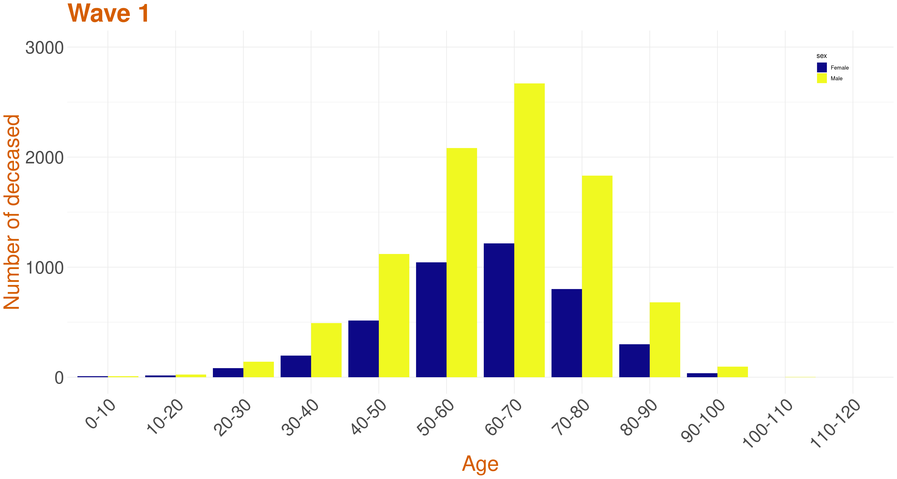
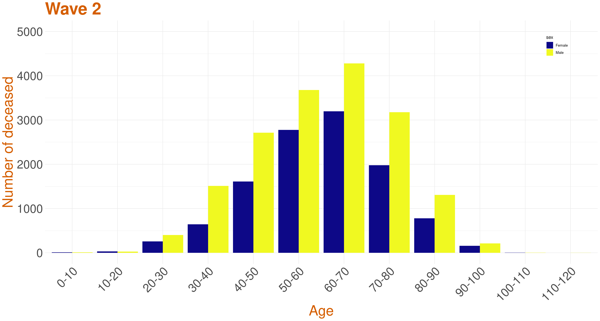
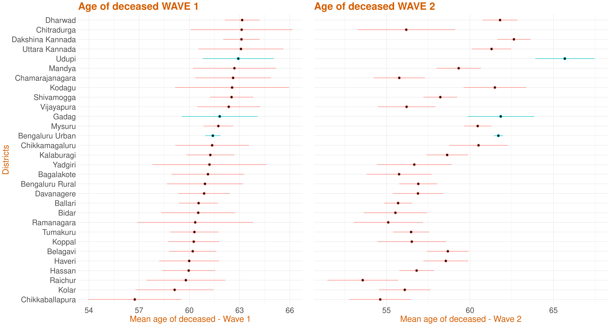

We have partitioned the pandemic timeline into three waves.
- Wave 1 - till the end of October 2020
- Middle wave - from November 2020 till the end of January 2021
- Wave 2 - from February 2021 till present
As the number of deceased during the Middle Wave were comparatively low, for some of the plots, we have only considered Wave 1 and Wave 2 data for our analysis.
Distribution of number of deceased

The graph on left represents monthwise death counts. Although there has been slight increase in deaths in August 2020, there is a visible spike of death cases in May 2021.
The graph on the right is a plot of number of deceased in each district in wave 1 versus the number of deceased in wave 2. The point size indicates the sum of deaths during the two waves across districts. The line y=x has been plotted. This suggests that the districts above the line have wave 2 death count higher than wave 1 death count, while districts below the line have wave 1 death count higher than that of wave 2. The number of deceased in Bengaluru Urban during wave 1 is 3836, during middle wave is 488 and during wave 2 is 11235 as of 2nd July, 2021. Due to the large count, this district has not been plotted.
Age and Gender Distribution across waves
The first two graphs (from the left) present the age distribution of wave 1 and
wave 2 deceased COVID-19 patients along with the
census of population of Karnataka for reference. Though the trends in
wave 1 and wave 2 are almost similar, from the graph it can be seen
that the mean age of deceased in wave 1 is around 61 and wave 2 is
around 60.


In the third graph (from the left) above we plot a stacked histogram of age
distribution across waves. The deceased population between 0-40 has
increased three fold during wave 2 and around two fold in the other
age groups. In all the below stacked age-gender graphs, the yellow color indicates the males while the blue indicates the females.


In all waves the there are significantly more male deaths as compared to that of female deaths.
The number of deceased across the age categories of 0-10, 10-20, 20-30, 30-40, 40-50, 50-60, 60-70, 70-80, 80-90, 90-100, 100-110 and 110-120 is calculated. The number of males and females dead in each of the mentioned age category is also calculated. Then, the ratio the number of males dead to the number of females is calculated.
The column has data on:
- The 12 age categories as mentioned above.
- The number of deceased belonging to the corresponding age category during wave 1.
- The ratio of the number of deceased males to females belonging to the corresponding age category during wave 1.
- The number of deceased belonging to the corresponding age category during the middle wave.
- The ratio of the number of deceased males to females belonging to the corresponding age category during the middle wave.
- The number of deceased belonging to the corresponding age category during wave 2.
- The ratio of the number of deceased males to females belonging to the corresponding age category during wave 2.
To understand the male and female death counts from the data, let us consider an example. Say, the total death count for some age category during some wave is 40 and the corresponding male to female ratio is 1.5. This implies that the number of males is 1.5 times the females. So, the total count, which is the sum of the number of males and females, will be (1.5 + 1 = 2.5) times the number of females. Finally, the number of females, here, would be 40/2.5 = 16 and number of males would be 40-16 = 24.
It can be observed that most of the ratios are above 1, suggesting that the number of males dead is higher than that of the females.
Data

This plot represents the confidence interval for the age of the deceased by each district. It has been ordered in descending order of mean age of the deceased in wave 1. The 95% t-interval around the mean age has been calculated and plotted. A wide variation about the districts can be observed. If the colour of the interval line is red,it implies that the corresponding district has high mean age of deceased in wave 1 as compared to wave 2, else if the interval line is green, it implies that this district has high mean age of deceased in wave 2 as compared to wave 1.
Hospitalisation of deceased patients across waves
The scatter plot of Hospitalisation Ratio of the deceased patients has been presented here across districts wave-wise.The Media Bulletin reports each deceased patient as either admitted to hospital, brought dead or died at residence, we call both the categories brought dead and died at residence as deceased patients who were not hospitalised.Then for each district, we count the total deceased patients and total hospitalised patients and take the ratio of hospitalised patients to total deceased patients to arrive at the hospitalisation ratio.We calculate the ratio for each district wave wise and then plot a scatter plot along with line y=x. The districts above the line x=y indicates that those have a higher hospitalisation ratio in 2nd wave in comparison to the 1st wave.

As per the media bulletin published by the state government, each individual death is reported either as hospitalised, brought dead,or died at residence.In the data file, for each individual district, we first categorise the deaths into waves, and we provide the count of total death, total deceased patients who were hospitalised, and deceased patients who were not hospitalised, that is, we added the deceased who were either brought dead or died at residence.Then we also calculate the ratio of hospitalisation and the ratio of unhospitalised patients and the values are listed in individual column of the csv file attached.
The column has data on:
- Name of District,
- Total deceased patients in wave-1,
- Total deceased patients hospitalised in wave-1,
- Hospitalisation Ratio in wave-1,
- Total deceased patients in wave-2,
- Total deceased patients hospitalised in wave-2,
- Hospitalisation Ratio in wave-2,
Data
Days to Decease (Wave-1 vs Wave-2)
The graphs below represents the scatter plot of mean days to decease across districts wave-wise. The x-axis represents the wave-1 mean days to decease where as the y-axis represents the wave-2 mean days to decease. The size of the blob indicates the total death in that district. The districts above the line x=y have high mean days to decease in wave-2 as compared to wave 1 and the districts below the line x=y have high mean days to decease in wave-1 as compared to wave 2.

The graph below represents the confidence interval for days to decease(wave-wise) in Karnataka based on the data collected. The 95% t-interval around the mean is calculated and plotted below.If the colour of the interval line is red, it infers that this district has high mean days to decease in wave 2 as compared to wave 1, else if the interval line is green, it implies that this district has high mean days to decease in wave 1 as compared to wave 2.

.
Days to Report (Wave-1 vs Wave-2)
The graphs below represents the scatter plot of mean days to report across districts wave-wise. The x-axis represents the wave-1 mean days to report where as the y-axis represents the wave-2 mean days to report. The size of the blob indicates the total death in that district. The districts above the line x=y have high mean days to report in wave-2 than wave 1 and the districts below the line have high mean days to report in wave-1 than wave 2.

The graph below represents the confidence interval for days to report(wave-wise) in Karnataka based on the data collected. The 95% t-interval around the mean is calculated and plotted below. If the colour of the interval line is red, it infers that this district has high mean days to report in wave 2 as compared to wave 1, else if the interval line is green, it implies that this district has high mean days to report in wave 1 as compared to wave 2.